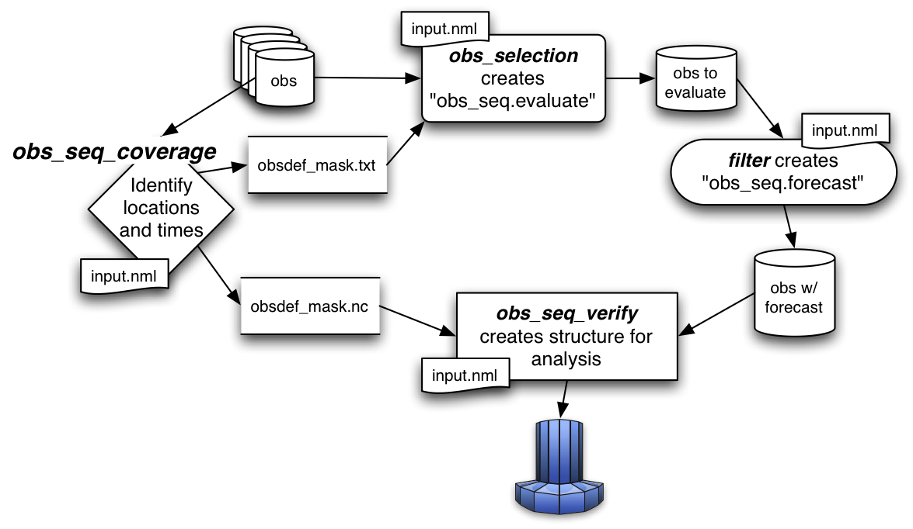

Jump to DART Documentation Main Index
version information for this file:
$Id$
|
|
Jump to DART Documentation Main Index |
obs_seq_coverage queries a set of observation sequence files to determine which observation locations report frequently enough to be useful for a verification study. The big picture is to be able to pare down a large set of observations into a compact observation sequence file to run through filter with all of the intended observation types flagged as evaluate_only. DART's forward operators then get applied and all the forecasts are preserved in a standard obs_seq.final file - perhaps more appropriately called obs_seq.forecast! Paring down the input observation sequence file cuts down on the unnecessary application of the forward operator to create observation copies that will not be used anyway ...
obs_seq_coverage results in two output files:
The following section explains the strategy and requirements for determining
what observations will be used to verify a forecast. Since it is 'standard practice'
to make several forecasts to build statistical strength, it is important
to use the SAME set of observation locations for all the forecasts that will
be verified together. To make the discussion easier, let's define the
verification network as the set of locations and times
for a particular observation type.
The entire discussion about finding locations that are repeatedly observed
through time boils down to the simple statement that if the observation is within
about 500cm of a previous observation, they are treated as co-located observations.
For some very high resolution applications, this may be insufficient, but there it is.
The only complicated part of determining the verification network is the
temporal component. The initial time (usually an analysis time
from a previous assimilation), the
verification interval, and the
forecast length
completely specify the temporal aspect of a forecast. The following example
has a verification interval of 6 hours and a forecast length of 24 hours. We adopt the
convention of also including the initial conditions (a "nowcast") in the
"forecast", so there are 5 times of interest - which we will call
verification times and are represented by
 .
The candidate observation sequence files are scanned to select all the
observations that are closest to the verification times.
The difference in time between the "nowcast" and the "forecast" is the
forecast lead.
.
The candidate observation sequence files are scanned to select all the
observations that are closest to the verification times.
The difference in time between the "nowcast" and the "forecast" is the
forecast lead.

So - that is simple enough if there is only one forecast, but this is rarely
the case. Let's say we have a second forecast. Ideally, we'd like to verify
at exactly the same locations and forecast leads - otherwise we're not
really comparing the same things. If the second verification network happens
to be at locations that are easy to predict, we're comparing apples and oranges.
The fair way to proceed is to determine the verification
network that is the same for all forecasts. This generally results in a pretty
small set of observations - a problem we will deal with later.
The diagram below illustrates the logic behind determining the list of
verification times for a pretty common scenario: a 24-hour forecast with a
forecast lead of 6 hours, repeated the next day.
The first_analysis is at VT1 - let's call it 00Z day 1.
We need to have observations available at:
VT1 (00Z day1),
VT2 (06Z day1),
VT3 (12Z day1),
VT4 (18Z day1), and
VT5 (24Z day1 / 00Z day2).
The last_analysis starts at VT5 00Z day 2 and must verify at
VT5 (00Z day2),
VT6 (06Z day2),
VT7 (12Z day2),
VT8 (18Z day2), and
VT9 (24Z day2 / 00Z day3).

Note that, if you wanted to, you could launch forecasts at VT2, VT3, and VT4 without
adding extra constraints on the verification network.
obs_seq_coverage simply provides these possible
forecasts "for free", there is no assumption about needing them.
We will use the variable verification_times to describe
the complete set of times for all possible forecasts. In our example above,
there are 5 possible forecasts, each forecast consisting of 5 verification
times (the analysis time and the 4 forecast lead times). As such, there are
9 unique verification times.
Note that no attempt is made at checking the QC value of the candidate
observations. One of the common problems is that the region definition
does not mesh particularly well with the model domain and the DART
forward operator fails because it would have to extrapolate (which is not allowed).
Without checking the QC value, this can mean there are a lot of 'false positives';
observations that seemingly could be used to validate, but are actually
just outside the model domain. I'm working on that ....
The USAGE section has more on the actual use of
obs_seq_coverage.
This namelist is read from the file input.nml. Namelists start with an ampersand '&' and terminate with a slash '/'. Character strings that contain a '/' must be enclosed in quotes to prevent them from prematurely terminating the namelist.
&obs_seq_coverage_nml obs_sequence_list = 'obs_coverage_list.txt', obs_sequence_name = '', obs_of_interest = '', textfile_out = 'obsdef_mask.txt', netcdf_out = 'obsdef_mask.nc', calendar = 'Gregorian', first_analysis = 2003, 1, 1, 0, 0, 0, last_analysis = 2003, 1, 2, 0, 0, 0, forecast_length_days = 1, forecast_length_seconds = 0, verification_interval_seconds = 21600, temporal_coverage_percent = 100.0, lonlim1 = missing_r8, lonlim2 = missing_r8, latlim1 = missing_r8, latlim2 = missing_r8, verbose = .false., debug = .false., /
Note that 'missing_r8' is not a valid number. To use the defaults delete these lines from the namelist, or set them to 0.0, 360.0 and -90.0, 90.0.
The date-time integer arrays in this namelist have the form (YYYY, MM, DD, HR, MIN, SEC).
The allowable ranges for the region boundaries are: latitude [-90.,90], longitude [0.,Inf.]
You can specify either obs_sequence_name or obs_sequence_list -- not both. One of them has to be an empty string ... i.e. ''.
| Item | Type | Description |
|---|---|---|
| obs_sequence_name | character(len=129) | Name of the observation sequence file(s). This may be a relative or absolute filename. If the filename contains a '/', the filename is considered to be comprised of everything to the right, and a directory structure to the left. The directory structure is then queried to see if it can be incremented to handle a sequence of observation files. The default behavior of obs_seq_coverage is to look for additional files to include until the files are exhausted or an obs_seq.final file is found that contains observations beyond the timeframe of interest. e.g. 'obsdir_001/obs_seq.final' will cause obs_seq_coverage to look for 'obsdir_002/obs_seq.final', and so on. If this is set, obs_sequence_list must be set to ' '. |
| obs_sequence_list | character(len=129) | Name of an ascii text file which contains a list of one or more observation sequence files, one per line. If this is specified, obs_sequence_name must be set to ' '. Can be created by any method, including sending the output of the 'ls' command to a file, a text editor, or another program. |
| obs_of_interest | character(len=32), dimension(:) | These are the observation types that will be verified. It is an array of character strings that must match the standard DART observation types. Simply add as many or as few observation types as you need. Could be 'METAR_U_10_METER_WIND', 'METAR_V_10_METER_WIND',..., for example. |
| textfile_out | character(len=129) | The name of the file that will contain the observation definitions of the verfication observations. Only the metadata from the observations (location, time, obs_type) are preserved in this file. They are in no particular order. obs_selection will use this file as a 'mask' to extract the real observations from the candidate observation sequence files. |
| netcdf_out | character(len=129) | The name of the file that will contain the observation definitions of the unique locations that match any of the verification times. This file is used in conjunction with obs_seq_verify to reorder the obs_seq.forecast into a structure that will facilitate calculating the statistics and scores of the forecasts. |
| calendar | character(len=129) | The type of the calendar used to interpret the dates. |
| first_analysis | integer, dimension(6) | The start time of the first forecast. Also known as the analysis time of the first forecast. The six integers are: year, month, day, hour, hour, minute, second -- in that order. |
| last_analysis | integer, dimension(6) | The start time of the last forecast. The six integers are: year, month, day, hour, hour, minute, second -- in that order. This needs to be a perfect multiple of the verification_interval_seconds from the start of first_analysis. |
| forecast_length_days forecast_length_seconds |
integer | both values are used to determine the total length of any single forecast. |
| verification_interval_seconds | integer | The number of seconds between each verification.
|
| temporal_coverage_percent | real | In the future, it may be possible to specify that you do not need an observation at every time. Presently, this is required to be 100% |
| lonlim1 | real | Westernmost longitude of desired region. |
| lonlim2 | real | Easternmost longitude of desired region. If this value is less than the westernmost value, it defines a region that spans the prime meridian. It is perfectly acceptable to specify lonlim1 = 330 , lonlim2 = 50 to identify a region like "Africa". |
| latlim1 | real | Southernmost latitude of desired region. |
| latlim2 | real | Northernmost latitude of desired region. |
| verbose | logical | Print extra run-time information. |
| debug | logical | Enable debugging messages. May generate a lot of output. |
For example:
&obs_seq_coverage_nml
obs_sequence_list = 'obs_coverage_list.txt',
obs_sequence_name = '',
obs_of_interest = 'METAR_U_10_METER_WIND',
'METAR_V_10_METER_WIND',
textfile_out = 'obsdef_mask.txt',
netcdf_out = 'obsdef_mask.nc',
calendar = 'Gregorian',
first_analysis = 2003, 1, 1, 0, 0, 0,
last_analysis = 2003, 1, 2, 0, 0, 0,
forecast_length_days = 1,
forecast_length_seconds = 0,
verification_interval_seconds = 21600,
temporal_coverage_percent = 100.0,
lonlim1 = 0.0,
lonlim2 = 360.0,
latlim1 = -90.0,
latlim2 = 90.0,
verbose = .false.,
/
assim_model_mod types_mod location_mod model_mod null_mpi_utilities_mod obs_def_mod obs_kind_mod obs_sequence_mod random_nr_mod random_seq_mod time_manager_mod utilities_mod
obs_seq_coverage is built in
.../DART/models/your_model/work, in the same way
as the other DART components.
There is no requirement on the reporting time/frequence of the
candidate stations. Once the verification times have been defined,
the observation closest in time to the verification
time is selected, the others are ignored.

In this example, we are generating an obsdef_mask.txt
file for a single forecast. All the required input observation sequence
filenames will be contained in a file referenced by the
obs_sequence_list variable. We'll also restrict
the observations to a specific rectangular (in Lat/Lon) region.
It is convenient to turn on the verbose option the first time
to get a feel for the logic. Here are the namelist settings if you want to
verify the METAR_U_10_METER_WIND and METAR_V_10_METER_WIND observations over the
entire globe every 6 hours for 2 days starting 18Z 8 Jun 2008:
&obs_seq_coverage_nml
obs_sequence_name = '',
obs_sequence_list = 'obs_file_list.txt',
obs_of_interest = 'METAR_U_10_METER_WIND',
'METAR_V_10_METER_WIND',
textfile_out = 'obsdef_mask.txt',
netcdf_out = 'obsdef_mask.nc',
calendar = 'Gregorian',
first_analysis = 2008, 6, 8, 18, 0, 0 ,
last_analysis = 2008, 6, 8, 18, 0, 0 ,
forecast_length_days = 2,
forecast_length_seconds = 0,
verification_interval_seconds = 21600,
temporal_coverage_percent = 100.0,
lonlim1 = 0.0,
lonlim2 = 360.0,
latlim1 = -90.0,
latlim2 = 90.0,
verbose = .true.,
/
The first step is to create a file containing the list of observation sequence files you want to use. This can be done with the unix command 'ls' with the -1 option (that's a number one) to put one file per line, particularly if the files are organized in a nice fashion. If your observation sequence are organized like this:
/Exp1/Dir20080101/obs_seq.final /Exp1/Dir20080102/obs_seq.final /Exp1/Dir20080103/obs_seq.final ... /Exp1/Dir20081231/obs_seq.final
then
creates the desired file. Then, simply run obs_seq_coverage - you may want to save the run-time output to a file. It is convenient to turn on the verbose option the first time. Here is a portion of the run-time output:
[thoar@mirage2 work]$ ./obs_seq_coverage | & tee my.log
Starting program obs_seq_coverage
Initializing the utilities module.
Trying to log to unit 10
Trying to open file dart_log.out
--------------------------------------
Starting ... at YYYY MM DD HH MM SS =
2011 2 22 13 15 2
Program obs_seq_coverage
--------------------------------------
set_nml_output Echo NML values to log file only
Trying to open namelist log dart_log.nml
location_mod: Ignoring vertical when computing distances; horizontal only
------------------------------------------------------
-------------- ASSIMILATE_THESE_OBS_TYPES --------------
RADIOSONDE_TEMPERATURE
RADIOSONDE_U_WIND_COMPONENT
RADIOSONDE_V_WIND_COMPONENT
SAT_U_WIND_COMPONENT
SAT_V_WIND_COMPONENT
-------------- EVALUATE_THESE_OBS_TYPES --------------
RADIOSONDE_SPECIFIC_HUMIDITY
------------------------------------------------------
METAR_U_10_METER_WIND is type 36
METAR_V_10_METER_WIND is type 37
There are 9 verification times per forecast.
There are 1 supported forecasts.
There are 9 total times we need observations.
At least 9 observations times are required at:
verification # 1 at 2008 Jun 08 18:00:00
verification # 2 at 2008 Jun 09 00:00:00
verification # 3 at 2008 Jun 09 06:00:00
verification # 4 at 2008 Jun 09 12:00:00
verification # 5 at 2008 Jun 09 18:00:00
verification # 6 at 2008 Jun 10 00:00:00
verification # 7 at 2008 Jun 10 06:00:00
verification # 8 at 2008 Jun 10 12:00:00
verification # 9 at 2008 Jun 10 18:00:00
obs_seq_coverage opening obs_seq.final.2008060818
QC index 1 NCEP QC index
QC index 2 DART quality control
First observation time day=148812, sec=64380
First observation date 2008 Jun 08 17:53:00
Processing obs 10000 of 84691
Processing obs 20000 of 84691
Processing obs 30000 of 84691
Processing obs 40000 of 84691
Processing obs 50000 of 84691
Processing obs 60000 of 84691
Processing obs 70000 of 84691
Processing obs 80000 of 84691
obs_seq_coverage doneDONEdoneDONE does not exist. Finishing up.
There were 442 stations matching the input criterion.
...
Note that the values of ASSIMILATE_THESE_OBS_TYPES and
EVALUATE_THESE_OBS_TYPES are completely irrelevant -
since we're not actually doing an assimilation.
The BIG difference between the two output files is
that obsdef_mask.txt contains the metadata
for just the matching observations while obsdef_mask.nc
contains the metadata for all candidate locations as well as a lot of
information about the desired verification times. It is possible to explore
obsdef_mask.nc to review the selection criteria to
include observations/"stations" that do not perfectly match the original selection
criteria.
Now that you have the obsdef_mask.nc, you can explore it with
ncdump.
netcdf obsdef_mask {
dimensions:
stations = UNLIMITED ; // (512 currently)
time = 9 ;
analysisT = 1 ;
forecast_lead = 9 ;
linelen = 129 ;
nlines = 446 ;
stringlength = 32 ;
location = 3 ;
variables:
int stations(stations) ;
stations:long_name = "desired station flag" ;
stations:description = "1 == good station" ;
double time(time) ;
time:long_name = "verification time" ;
time:units = "days since 1601-1-1" ;
time:calendar = "GREGORIAN" ;
double analysisT(analysisT) ;
analysisT:long_name = "analysis (start) time of each forecast" ;
analysisT:units = "days since 1601-1-1" ;
analysisT:calendar = "GREGORIAN" ;
int forecast_lead(forecast_lead) ;
forecast_lead:long_name = "current forecast length" ;
forecast_lead:units = "seconds" ;
double verification_times(analysisT, forecast_lead) ;
verification_times:long_name = "verification times during each forecast run" ;
verification_times:units = "days since 1601-1-1" ;
verification_times:calendar = "GREGORIAN" ;
verification_times:rows = "each forecast" ;
verification_times:cols = "each verification time" ;
char namelist(nlines, linelen) ;
namelist:long_name = "input.nml contents" ;
char obs_type(stations, stringlength) ;
obs_type:long_name = "observation type string at this station" ;
double location(stations, location) ;
location:description = "location coordinates" ;
location:location_type = "loc3Dsphere" ;
location:long_name = "threed sphere locations: lon, lat, vertical" ;
location:storage_order = "Lon Lat Vertical" ;
location:units = "degrees degrees which_vert" ;
int which_vert(stations) ;
which_vert:long_name = "vertical coordinate system code" ;
which_vert:VERTISUNDEF = -2 ;
which_vert:VERTISSURFACE = -1 ;
which_vert:VERTISLEVEL = 1 ;
which_vert:VERTISPRESSURE = 2 ;
which_vert:VERTISHEIGHT = 3 ;
which_vert:VERTISSCALEHEIGHT = 4 ;
int ntimes(stations) ;
ntimes:long_name = "number of observation times at this station" ;
double first_time(stations) ;
first_time:long_name = "first valid observation time at this station" ;
first_time:units = "days since 1601-1-1" ;
first_time:calendar = "GREGORIAN" ;
double last_time(stations) ;
last_time:long_name = "last valid observation time at this station" ;
last_time:units = "days since 1601-1-1" ;
last_time:calendar = "GREGORIAN" ;
double ReportTime(stations, time) ;
ReportTime:long_name = "time of observation" ;
ReportTime:units = "days since 1601-1-1" ;
ReportTime:calendar = "GREGORIAN" ;
ReportTime:missing_value = 0. ;
ReportTime:_FillValue = 0. ;
// global attributes:
:creation_date = "YYYY MM DD HH MM SS = 2011 03 01 09 28 40" ;
:obs_seq_coverage_source = "$URL$" ;
:obs_seq_coverage_revision = "$Revision$" ;
:obs_seq_coverage_revdate = "$Date$" ;
:min_steps_required = 9 ;
:forecast_length_days = 2 ;
:forecast_length_seconds = 0 ;
:verification_interval_seconds = 21600 ;
:obs_of_interest_001 = "METAR_U_10_METER_WIND" ;
:obs_of_interest_002 = "METAR_V_10_METER_WIND" ;
:obs_seq_file_001 = "obs_seq.final.2008060818" ;
data:
time = 148812.75, 148813, 148813.25, 148813.5, 148813.75, 148814, 148814.25,
148814.5, 148814.75 ;
forecast_lead = 0, 21600, 43200, 64800, 86400, 108000, 129600, 151200, 172800 ;
}
The first thing to note is that there are more stations (512) than reported
during the run-time output (442). Typically, there will be many more stations
in the netCDF file than will meet the selection criteria - but this is just
an example. Some of the stations in the netCDF file do not meet the selection
criteria - meaning they do not have observations at all 9 required times.
Furthermore, there are 512 locations for ALL of the desired observation types.
In keeping with the DART philosophy of scalar observations, each observation
type gets a separate station. There are not 512
METAR_U_10_METER_WIND observations and 512 METAR_V_10_METER_WIND observations.
There are N METAR_U_10_METER_WIND observations and M METAR_V_10_METER_WIND
observations where N+M = 512. And only 442 of them have observations at all the
times required for the verification. Dump the obs_type variable
to see what station has what observation type.
The stations variable is fundamentally a flag that
indicates if the station has all of the desired verification times. Combine
that information with the obs_type and
location to determine where your verifications of
any particular observation type will take place.
Now that you have the obsdef_mask.txt, you can run
obs_selection to subset the observation sequence
files into one compact file to use in your ensemble forecast.
| Routine | Message | Comment |
|---|---|---|
| obs_seq_coverage | 'namelist: temporal_coverage_percent (xxxx) must be == 100.0 for now.)' | it is required that ALL verification times be present for all forecasts |
| obs_seq_coverage | 'specify "obs_sequence_name" or "obs_sequence_list"' | one of these namelist variables MUST be an empty string |
| obs_seq_coverage | 'xxxxxx ' is not a known observation type.' | one of the obs_of_interest namelist entries specifies an observation type that is not supported. Perhaps you need to rerun preprocess with support for the observation, or perhaps it is spelled incorrectly. All DART observation types are strictly uppercase. |
| obs_seq_coverage | 'need at least 1 qc and 1 observation copy' | an observation sequence does not have all the metadata necessary. Cannot use "obs_seq.in"-class sequences. |
| obs_seq_coverage | 'num_copies ##### does not match #####' | ALL observation sequences must contain the same 'copy' information. At some point it may be possible to mix "obs_seq.out"-class sequences with "obs_seq.final"-class sequences, but this seems like it can wait. |
| obs_seq_coverage | 'No location had at least ### reporting times.' | The input selection criteria did not result in any locations that had observations at all of the required verification times. |
| set_required_times | 'namelist: forecast length is not a multiple of the verification interval' | The namelist settings for forecast_length_[days,seconds] and verification_interval_seconds do not make sense. Refer to the forecast time diagram. |
| set_required_times | 'namelist: last analysis time is not a multiple of the verification interval' | The namelist settings for first_analysis and last_analysis are not separated by a multiple of verification_interval_seconds. Refer to the forecast time diagram. |
none
Relax the restriction requiring 100.0% temporal coverage.
Sensibly require that we only require against observations that DART can compute.
i.e. the prior forward operator must complete successfully - almost all cases
of the operator failing are extrapolation issues; the observation is outside
the domain.
Note that no attempt is made at checking the QC value of the candidate
observations. One of the common problems is that the region definition
does not mesh particularly well with the model domain and the DART
forward operator fails because it would have to extrapolate (which is not allowed).
Without checking the QC value, this can mean there are a lot of 'false positives';
observations that seemingly could be used to validate, but are actually
just outside the model domain. I'm working on that ....
DART software - Copyright 2004 - 2013 UCAR.
This open source software is provided by UCAR, "as is",
without charge, subject to all terms of use at
http://www.image.ucar.edu/DAReS/DART/DART_download
| Contact: | DART core group |
| Revision: | $Revision$ |
| Source: | $URL$ |
| Change Date: | $Date$ |
| Change history: | try "svn log" or "svn diff" |